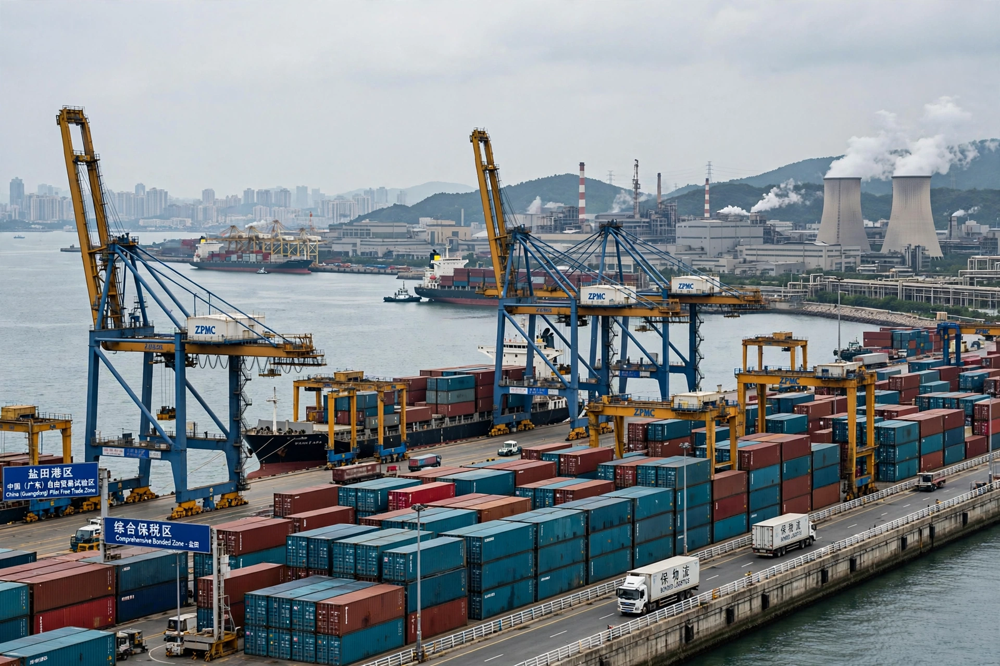

Special economic zone
From Wikipedia, the free encyclopedia

A special economic zone (SEZ) is a designated area within a country where business and trade laws differ from the rest of the country — typically offering tax incentives, streamlined customs and regulation to attract foreign investment and boost exports. The modern form was pioneered at Shannon, Ireland (1959) and scaled spectacularly by China from 1980 (Shenzhen above all); thousands of zones now operate in over 100 countries, employing tens of millions.
Types and history
SEZs range from free-trade zones and export-processing zones to comprehensive city-scale experiments (Shenzhen, Zhuhai, Shantou, Xiamen, then Hainan and Pudong). South Korea, Taiwan, Mauritius and the UAE (Jebel Ali) built growth strategies on them; India's 2005 SEZ Act multiplied enclaves with mixed results amid land-acquisition conflicts.
Assessment
Zones succeed when they plug economies into world markets with infrastructure and credible rules (China, Mauritius) and disappoint as isolated tax shelters; economists debate spillovers versus enclave effects, labour standards inside fences, and whether China's success was the zones or the reforms they piloted — SEZs as policy laboratories whose lessons the whole country then adopted.